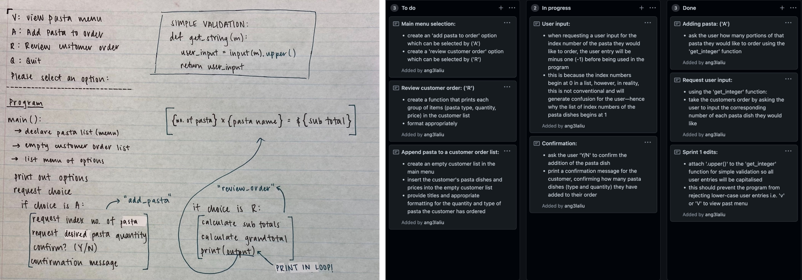
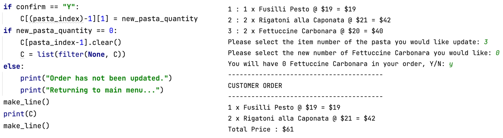

Brief
To develop a computer program using techniques and processes that will allow an operator/user to place an order for a customer, as well as responding accordingly to any user errors or unexpected entires. Some features within the program include allowing the operator to review and update the customers pasta choices, enter customer details, display pasta(s) ordered and pick-up/delivery requirements, before then displaying delivery details, final order and total cost.
Initial Project Backlog:
The image above is a screenshot of my initial project backlog on GitHub, with brief notes regarding what I had planned to do for this project. The image below is the same backlog, I updated it just before starting my fourth sprint. Of the three 'potential ideas' I had in mind, I was only able to code one of them to function, the 'What is this pasta?' Given my remaining time frame at that point, it was likely the only one I could code due to its simplicity. Another thing that changed was 'remove pasta' became 'update pasta', so rather than requesting a number of pasta to be removed, instead the program asks for the new desired quantity. I also realised that requesting customer details would not necessarily result in the completion of an order, so I introduced 'finish order' which would allow the user to check over their order and details once more before finishing.
Describing Relevant Implications
Usability & End User Considerations
The digital product should be easy to operate and clearly communicate instructions to the user. The product should be created with the user in mind, and it must be considered how they will interact with the product and for the ordering system to be programmed so that the user has a positive experience. This should include what the words describe and the way the screen is organised. The program should 'speak the user's language', meaning the text and information should appear in a suitable language and reading level. The program is expected to have error prevention methods, so if the user makes a mistake, the problem should be politely communicated and give the user an opportunity to correct it. The user should be able to intuitively learn the program quickly, the options/actions should be easy to understand.
Functionality
The program is expected to be functional and tested to guarantee this. The ordering system should not crash, give inaccurate prices or give inappropriate feedback. It is expected to perform correct arithemtics and the variables (lists) should be all reset, ready for the next user/customer, once the order is complete. The definition of functionality is to have a digital product which is working efficiently and free of bugs. If a platform is functional, it should be able to fufill its purpose with ease, identifying and preventing errors and unexpected inputs, which could lead to serious issues and crashes in the code.
Sustainability & Future Proofing
After the program has been completed, we should be able to understand how it works after long periods of time or if it were handed over to another developer, they too should be able to understand the code without much difficulty. This is where commenting comes in to allow future changes or additional information to be put in. Not only this, but also the program should be well structured so that adding in new data, such as new pasta dishes or even a desserts menu, is not a complicated process.
Sprint One
Aim:
To create a main menu for users which runs in a loop, with two options; print the pasta menu or quit the program and consequently, stop the loop. The pasta menu displayed after selecting the print option should have a corresponding item number as well as price.
Planning Board & Code Output:

Reflection:
The first sprint I have completed for my program prints a basic pasta menu for the customer when requested, along with a list of the pasta prices. The program runs in a loop, which means every time the pasta menu is printed (upon the user request 'V' to 'view' menu) the user is redirected to the main menu, until the quit option ('Q') is requested. If the user requests to quit the program, the loop terminates and a confirmation message is printed, informing the user that the program has ended. I have also coded 'get_integer' and 'get_string' functions, which provide simple validations for the program when the user enters either a numerical or string variable. I have considered adding further validation to the 'get_string' code to capitalise all user entries in the second sprint. This should generate less issues for the user (as when entering an 'v' or 'q' the program will still accept/understand the user entry) and prevent the program from crashing altogether. The 'get_integer' function is not yet being put to use in the program, but will certainly be called in future sprints when the user is able to order a pasta/select an index number from the pasta list. In my next sprint, I aim to introduce a function that will allow the user to add pasta to their order. I have yet to run into any errors in the code.
Sprint Two
Aim:
To create a function which allows the user to order a pasta dish from the pasta menu, selecting a flavour and quantity of choice. Another function will also be created to enable the operator to review their current order status, which means printing all of the pasta flavours and quantities they have ordered as well as the price. These options will be incorporated into the main menu as 'A' for 'Add pasta to order' and 'R' for 'Review customer order'.
Stand Up:

Planning for sprint two includes a short meeting at the beginning of the lesson which questions what we have already completed, what we intend to complete and what is blocking us from doing so. On the 21st of June, I had completed and tested the first sprint of my program and pushed it to Github. I decided, as seen above, to finish a reflection for my first sprint and start planning for my second sprint, which involes creating an add pasta to order and review order function.
Planning Board & Code Output:

Reflection:
An error I encountered was if the user entered an index number that did not exist, such as 100, the program would crash and as it is unable to find a value in the pasta menu list which matched the user's input. As there are no validations which can yet prevent the user from entering invalid indexes, the program could not recover from this error and crashed. Consequently, I plan to make validations in a future sprint of my program which will provide limits for the user's inputs surrounding indexes and quantities. In my next sprint, I intend to create an option for the user to remove pasta from their order.
Sprint Three
Aim:
To create a function which allows the user to remove a number of pasta dishes in their current order. The function should print out the customer order with corresponding item numbers and ask the user which pasta dish they wish to change the quanity of. The user can then input the number of pasta dishes they would like to remove. This delete pasta option will be incorporated into the main menu as 'D' for 'Delete pasta'.
Planning Board & Code Output:
Reflection:
The images above illustrates what I originally intended for this sprint, to create a function that removes pasta from the order. However, upon reviewing this, I was unsatisfied with how the code handled duplicate pasta dishes, as shown with fusili pesto. I decided that I wanted to trial a different way of performing the same or similar function more effectively, potentially by just changing the quantity of an existing pasta in the order list. A second round of planning is required for this sprint and a push to GitHub was not made.
Sprint Three: Reworked
Aim:
To create a function which allows the user to update a number of pasta dishes in their current order. The function should print out the customer order with corresponding item numbers and ask the user which pasta dish they wish to change the quanity of. The user can then input the new number of dishes they would like. This update pasta option will be incorporated into the main menu as 'U' for 'Delete pasta'.

Reflection:
This 'update pasta' function is slightly different from what I initially planned in my project backlog. My original idea was to create a function where the user can remove a certain number of pasta from their order. I ultimately decided that rather than asking how many pasta the user would like to remove, it would be more appropriate for the program to ask for the new quatity of desired pasta. This design choice can be effective in situations where the user would like more of a pasta they have already ordered. I thought an 'update pasta' function would be more sutiable, rather than using the 'add pasta' option and creating a double up in the list. However, this would be irrelvant should the user choose 'add pasta' rather than 'update pasta' in a circumstance such as this.
The first screenshot demonstrates how the update pasta function runs when the user makes no mistakes upon entry. The second screenshot next to it is where I encountered an error, a string is entered when the program wants an integer. There is no validation to support this and return an error message, so instead the program crashes. This is something I will be looking to validate in my final sprint. In my next sprint, I aim to start introducing more functions that will cmake up the rest of the user options in the main menu, e.g. cancel order, complete order, etc.
Sprint Four
Aim:
To create several functions which will allow the user to view a general description of each pasta dish, cancel their order, input customer details and finalise the order. Pasta description ('P') will print pasta names, description of dish and prices upon request. Cancel order ('C') will request confirmation from the user, before clearing both the customer order and details lists or state that no changes have been made. Get customer details ('G') will request an order name, phone number and delivery option. Pick up is free of charge and delivery is an extra $3, the program will request an address. Finish order ('F') will display the order and details for the user to check once more before requesting confirmation.
Planning Board & Code Output:

Reflection:
I introduced many functions to this sprint in order to bring it closer to completion. Printing the pasta descriptions and having an option to cancel the order were relatively straightforward and did not cause much trouble. For getting customer details, I initially struggled with how I wanted to go about coding the function. My original idea was to leave the values: order name, phone number and address, just as their variables but this proved to be difficult when I wanted to call on this information from outside of the delivery option function. So I declared an empty customer details list under the customer order list, this way I would be able to store the information and call on it where appropriate.

Reflection:
Most of the screenshots above depict the code running well without errors, except for the bottom one on the right side. I also met this issue in my previous sprint, where the program wants an integer input but instead recieves a string. The program expectedly crashes due to a lack of validation. In my next sprint, I plan to focus on validating a good amount, if not all, of my code and prevent it from crashes as it has in my earlier sprints.
Sprint Five
Aim:
To validate all user entries in the ordering system. This can be done by making edits to the get_integer() and get_string() functions, as well as creating new functions that will only accept certain values e.g. Y or N for yes/no user confirmation.
Planning Board & Code Output:
Reflection:
In the left hand image above, is another screenshot again illustrating how the program crashes when it wants an integer but recieves a string. This is an error that has constantly appeared throughout my previous sprints. The middle image documents my attempt at validating the length for integer entries but this code fails to catch this problem the code keeps experiencing and the program was continuing to crash. The image above on the right hand side depicts using try, except is effective in validating string entries for my get_integer function. The program does not crash and instead returns an error message, asking the user to try again because they have not entered a whole number.
Reflection:
The image on the left illustrates the integer validation working in the code. The program does not crash and returns an error message as intended. The images on the right are examples of some validation in my code. The get_string() function has minimum and maximum lenths for user entry, to get appropriate inputs from the user, not too long and not too short. The get_yn() function was created just to validate the several user confirmation requests throughout my code, so it will only accept 'Y' or 'N' for yes/no. At this stage, I am satisfied with the abilities of my code and this is my final sprint.
Finishing the Project
Error Process Example:
Upon revisiting my update_pasta() function, I realised that the user did not have an option to completely remove a pasta dish. This is because I had set the minimum value to 1 when it should have been 0. The first screenshot is my change in the code (at new_pasta_quantity), the second on the left is my error, and the image on right is the code output after a slight adjustment in the function.
I attempted to code the function so it would remove any pasta that has a quantity of 0, using the clear() function, as it would be redundant to continue to store this information. However, upon printing the customer order again for the user to review, my program crashed. As I was initially unsure of what had caused this, I performed a test by print out the customer order list upon confirmation. As shown in the right hand image above, although the list had been emptied, it still exists in the customer order list.

The image on the left depicts using a filter to fix this issue and remove any lists that are blank with no values. The image on the right is a screenshot of the function running smoothly without error.
Code Checker:
I was not looking to do a sixth sprint after sprint five, so I thought it would be an appropriate time to run my code through the code checker. As the code has since advanced from its earlier stages with more functions and comments, it surpasses the character limit the Python 3 Style Checker can cope with/check through. I was able to run most of my code through, just cutting off the finish order and main menu functions to check through seperately. The first screenshot on the left illustrates most of my code initally in the code checker and the second screenshot to the right is testing the doctyping on my get_integer function.
However, I still have errors even in my final code. All 27 if them happen to be in regards to the length of some lines of code. Character lengths (over 79) generally require simple fixes which can easily be accomplished. In saying that, sometimes shortening the character length of a line can generate more issues for the program, doing more harm than good. I did not make too much of an effort to try fix this, as I noticed that most if not all of these lines would not run properly or convey the message I intended for the user. For example, the lines of pasta descriptions are over 79 characters and cosequently, are labelled as an error because they are too long. As I was unable to see how I would shorten the descriptions provided by the pasta bar 1154 themselves, I decided that it would not be appropriate to 'fix' it.
GitHub Commits:
During this project, I committed/pushed my work to GitHub after every sprint I completed. Looking back on this, I believe it would have been more beneficial if I was pushing my work to GitHub more regularly, rather than after every sprint, in order to keep the most updated version of my project saved on the platform. A commit on Github is considered to be like a snapshot or a milestone of the progress which has been made so far, with a series of commits resulting in a project's timeline. Through commiting my work onto a separate platform, I am ensuring my progress is being saved, which in a situation such as where my laptop is damaged, is extremely helpful. As displayed in the screenshot below, I had only commited my work to GitHub after each sprint but there were times when I was spending a fair bit of time on these individual sprints, particularly during my fourth and fifth sprints. In future, I think I should make an effort to push more often and save my work more securely.
Test Video
Video Reflection:
For the final test of my program, I asked my younger sister to place an order as if she was a customer. Outside sources are always very helpful, with someone unfamiliar testing my program, there is a much higher likeliness of uncovering errors that I may have missed along the way. Fortunately, no major errors appeared. However, at 3:17 in the video, my sister entered a string of randomm letters for the customer phone number and the program accepted this. I recognised that this is because the user entry for the phone number is a string rather than an integer. I was unsure of how to validate this, as this varible must remain a string. Otherwise the 0 at the beginning of a home/cell number would be ommitted if it were an integer, and the program would be storing inaccurate information.
Overall Reflection
What has been successful?
I have successfully planned, coded and test a pasta ordering system which fufills the bried I had initially set outo complete. The program can successfully recieve, edit and print a customer's pasta order and their personal details. The program can easily identify and combat unexpected or inaapropriate user entries, with support from various validation methods. Users are able to review their orders, make multiple changes and even cancel their entire order, which means the program is emptied of all their previous pasta choices and information. The ordering system can successfully calculate the prices of an order, which includes both the sub total and grand total. It the user attempts to order a pasta that already exists in their order list, the program will immediately let the user know the remaining number of said pasta they are able to order (max 5, so 5 - current quantity). In the same situation, if the pasta quantity is already at the maximum (5), the user is redirected to the main program and the program states that the user cannot add any more of that pasta. The validation for both situations is effective in eliminating any double up pasta dishes that may appear. Customers are able to pick between a delvery or pick-up option, with an automatic delivery fee charged to their grand total if selected. Finally, users are able to end and begin new orders via the finalise option of the main menu (as well as the cancel order option), which enables users to confirm their entire orders and begin new orders (storing no previous information) when requested.
What are the problems?
Due to the time restraint on this project, it unlikely I was going to complete everything I had planned in my project backlog. For example, I needed to prioritise creating and completing functions which were essential for the program to run properly, opposed to others which were possibly more entertaining (e.g creating a sides/dessert menu). However, because I focused on creating components which were essential for the functionality of the program, there are very few problems I can identify. One issue which I have previously discussed, includes the phone number in the customer details. The program recognises this value as a string input rather than an integer, which seemed to generate more errors. This can cause issues as the user can enter letters or words as their phone number. Consequently, if I had more time or was able to repeat this process, I would aim to create another sprint which would target and resolve this specific issue.
Things to consider
I repeated the process of planning and coding to trial different ways to remove/update pasta in my third sprint. Although I ultimately used the update pasta function over the delete pasta function, I think it would have been wiser to incorporate both into my program. The issue with 'update' pasta is that some users may not understand that this is what you would select to completely remove a type of pasta dish from the order list. In saying so, I believe that incorporating both 'delete pasta' and 'update pasta' together would have been the most effective in my program.
During my fourth sprint, where I was looking at introducing a 'finish order' function, I considered where the information from both the customer order list and the personal details list would be stored. In the real world, this information would likely be sent off to process and have the order be made and potentially stored in something like a database. However, for the purposes of this project, the information from both lists is simply ommitted after confirmation from the user.
If I were to repeat this process of planning and programming an ordering system, I would like to look at potentially creating an option for the user to return to the main menu at any given time. If, for example, the customer accidentally selected 'add pasta' when they actually wanted 'update pasta', they may not know until after having entered a couple values that this can easily be stopped by selecting 'N' at the confirmation request. If the user had an option to return to the main menu at any time, this could perhaps generate less worry and confusion, resulting in a more postive user experience.
Addressing Relevant Implications
Usability & End User Considerations
I have addressed the usability and end user considerations implication by creating validations throughout my code, all of which test the user's input and ensure it is appropriate under a given setting before returning it. A particular example where the user's input is saved from error, regards the validation which converts all of their string inputs to upper case. This means that despite being asked to enter 'Y' or 'N' for example, the user can enter 'Y', 'y', 'N', 'n' and the program will accept all of the user's entries. In conjunction with this, I have also made sure that all communication and messages to the user are clear and friendly so that they is aware of what is going on and any issues are described.
Functionality
The second relevant implication my program focused on was functionality. I have addressed this implication by conducting thorough and regular tests for each sprint. Throughout the development process, each sprint leading up to the end result has been tested and checked for improvements as well as further developements where appropriate. This can be seen in all of my planning and screen captures of the code and its ouputs for each test, as well as identifying any errors and bugs which have occured. I also conducted a full 'run through' test with a new user/'customer' to ensure that the program can handle unexpected user inputs. In conjunction with this, I took care in testing each function using a seperate test file before intergrating it into my main program. As a result, my program has been designed to successfully identify and combat expected and unexpected user errors through vigorous testing processes, all of which prove its strength and functionality.
Sustainability & Future Proofing
The final relevant implication I have addressed is sustainability and future proofing. I have addressed this implication by building my program around a function structure, where every new feature or addition is a separate function which can be easily integrated into the main program. With every new function also resulting in a new sprint, this makes introducing any new additions/features an easy and efficient process. Addtionally, I have added doc strings and comments throughout the code. The functions are described as well as other sections of my code, allowing my work to be more easily understood by other developers and programmers. This means my program can remain relevant to society, as a variety of coders can understand and edit my work with ease, as the commenting is present throughout the code. During this project I also ran my program through a code checker. This made sure I had appropriate tab spacings, indents and line lengths, all of which fit Python conventions. Furthermore, this makes my work recogniseable to other coders who are familiar with this computer language and can therefore, evaluate and make useful additions to my work.